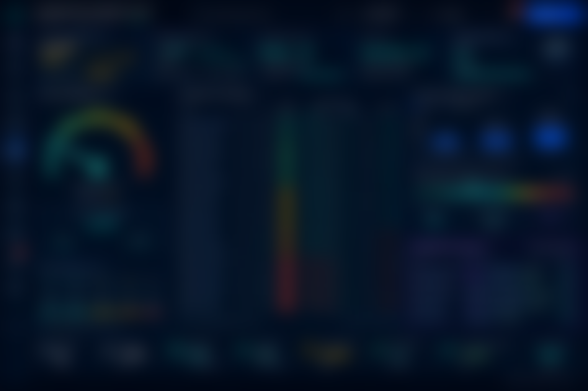

One Dataset, Every Emissions Obligation
Shipping's regulatory stack now runs in parallel — IMO CII, EU ETS, FuelEU Maritime, MRV and DCS — each demanding accurate fuel and voyage data. Volaxin's carbon monitoring software uses the same operational data the platform already captures, so compliance is a calculation, not a data-collection project, and the numbers agree across every regime.
Core Capabilities
- IMO CII ratings — AER-based CII per vessel with A–E banding and trend against the tightening reduction factors.
- EU ETS allowance tracking — allowance exposure and cost as the phase-in scales up.
- FuelEU Maritime — GHG-intensity compliance with banking, borrowing and pooling.
- EU MRV & IMO DCS — verifier- and administration-ready reports generated automatically.
- Poseidon Principles — portfolio-alignment reporting for financed emissions.
- Decarbonisation roadmaps — per-vessel levers and forecasts to plan the years ahead.
Because CII draws on hull, propeller and engine efficiency, the levers live in maintenance and voyage optimisation — which is exactly why having them on one platform matters.
The Payoff
- No parallel spreadsheets — one dataset feeding CII, ETS, FuelEU, MRV and DCS.
- Managed cost exposure — see EU ETS and FuelEU liability before it lands.
- Better ratings, planned — roadmaps tied to real operational levers.
- Audit-ready reporting — verifier-ready outputs on demand.
Make compliance a calculation, not a project
Book a free demo and see CII, EU ETS, FuelEU and MRV reporting running off your existing voyage and bunker data.
Request a DemoFrequently Asked Questions
What does maritime carbon monitoring software do?
It calculates and reports emissions obligations — IMO CII, EU ETS, FuelEU, MRV and DCS — from the fuel and voyage data already captured.
Does it handle EU ETS and FuelEU?
Yes — EU ETS allowance exposure and FuelEU GHG-intensity with banking, borrowing and pooling.
Does it produce MRV and DCS reports?
Yes — automatically, with Poseidon Principles reporting and decarbonisation roadmaps.